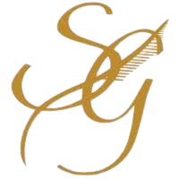

Damien Bonnet-Eymard
Doctorant en Scientific Machine Learning @ KU Leuven | Boursier MSCA
Je suis un doctorant doté d’une solide formation en machine learning et en physique, développant des "Physics-Informed Neural Networks" pour résoudre des problèmes complexes en physique. Fort d’une maîtrise avancée de Python et d’une expérience en tant que contributeur open-source, je recherche à rejoindre une équipe innovante où je pourrai mettre à profit mes compétences en scientific machine learning.
Expérience
Doctorat en SciML @ KU Leuven(2021 - Présent)
Boursier Marie Skłodowska-Curie Actions (MSCA), au sein du projet GREYDIENT, développant des modèles grey-box alliant approches data-driven et basées sur la physique. Ma recherche se concentre sur des Physics-Informed Neural Networks (PINNs) robustes pour la mécanique des solides, incluant :
-
Propagation d'incertitudes : Propagation des incertitudes microscopiques vers la réponse mécanique des matériaux composites.
-
Identification des matériaux : Récupération des propriétés matérielles à partir de mesures plein champ.
Stage en analyse de données @ EDF (PRISME R&D) (2020)
Développement d’outils au sein du département R&D de modélisation et de surveillance :
- Nouveau composant pour la bibliothèque ThermoSysPro (Modelica) modélisant l’hétérogénéité du cœur de réacteur nucléaire.
- Modèle de régression régularisée (pandas, Scikit-learn) prédisant les points de fonctionnement d’une centrale électrique.
Stage en traitement de données @ Diocles (2019 - 2020)
Travail au sein d’une équipe internationale sur le traitement des données provenant de scanners corporels :
- Traitement de données 3D (maillage, nuage de points) à l’aide de MATLAB pour l’extraction d’indicateurs.
- Implémentation d’un algorithme de heat kernel signature pour l’analyse de formes.
- Conception et mise en place d’un pipeline de correction des erreurs d’acquisition de mesures.
Formation
-
KU Leuven (2021 - )
Doctorant sous la direction de Prof. David Moens et Prof. Matthias G. R. Faes
-

École Centrale de Lyon (2017 - 2021)
Diplôme (Master) : Ingénieur général - option Informatique
Cours principaux : Fluid/Continuum Mechanics, Statistiques, Traitement du signal, Automatique, AI and Machine Learning
-

Classe Préparatoire Sainte-Geneviève (2015 - 2017)
Cours principaux : Maths, Physique, Chimie
Compétences techniques
Machine Learning
PyTorch; JAX; Cuda; DeepXDE*
Data Science
Scikit-learn; Pandas; R; MATLAB
Physics
FEniCS; Modelica; Abaqus
Centres d'intérêt & Projets parallèles
Sports : Tennis, course à pied et cyclisme.
Programmation : Contributeur open-source. Plusieurs projets personnels, dont :